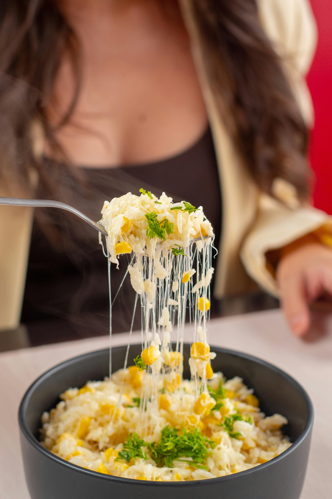

One-Pot Cheesy Chicken and Rice
A comforting and cheesy one-pot meal that’s perfect for busy weeknights.
Kid-Friendly・One-Pot・Adaptable
Total Time
2 hrs 10 mins
Difficulty
Easy
Servings
8
Main Ingredients
Chicken breasts, rice, and shredded cheese. You can also add veggies like broccoli or peas for extra nutrition and flavor.
View Recipe